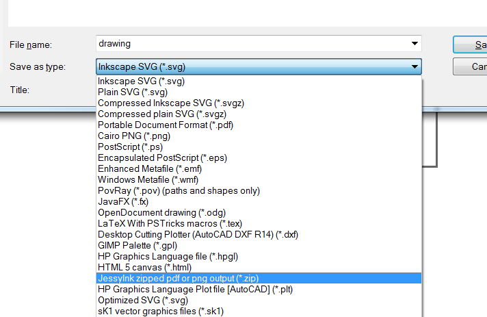

The daily corporate dreariness that tugs at our imagination; pulling us into hazardous waters, uncharted fun. What adventure will this dreariness force us to fall into? What will this strange and perplexing adventure teach us?
What technology here, in this cage we willing sit, makes us distrustful of it; makes us lose our patience, and turns us away without the data we have searched? If the Sphinx were to ask a riddle, "what is that that plagues your days with corporate fodder?" And What, What is the purpose of this device; a device of holding that we all distrust? And then like the Sphinx, we question, what value does this give us? Does it give us truth, or does it give us untruth, and in the end, do either exist in this realm of corporate word-smithing?
How could anything originate out of its opposite? How can we extract learning and truth, out of banality and untruth? How can we bring the wise man back from the brink of mental destruction? Are these just dreams of a fool? Can something be done to save our poor souls from the damnation of the corporation?
But who wishes to concern himself with such dangerous thoughts? For that investigation one must push beyond the spreadsheets and documents held within the system. You must throw away your title, knowledge worker, and become something greater.
How far can an idea take us from the tedium of the day, and what distance is needed to bring us to a: life-furthering, life-preserving, and species-preserving state for our mental well being? We must grasp to this hope which is indispensable to us now, for without that we are left staring at a monitor of hoodoo and voodoo we care very little about.
But the idea is why we are here, and that idea is to add verbs to each little click of the mouse. The verb we'll be adding is boom, and we'll do it in the language of animated pictures on the screen. Each click, a new explosion added to the sharepoint screen.
The Explosion was created in inkscape by separating each part of the explosion onto it's own layer and then exporting all the layers via save as -> JessyInk Zipped png from the main inkscape menu.

This exports a zip file which has each layer exported as a separate png file. Once I have all those small files, I use ImageMagic's convert utility to put them all together as an animated gif file
``` convert.exe -dispose Background -delay 7 -loop 1 -resize 150x150 tempa\\*.png boom.gif ```
and that gets you this (except the real version only loops once)
I was doing this so many times, I put together a small python scripts to do it for me to save some typing: script
The next thing I needed to do was get the animation to play wherever the mouse might click happen to click on the page. I took the lazy route and use jquery to do a lot of the heavy lifting which probably increased the size of the final javascript, but hey, it's only more bits.
To get the position of the mouse click I just attached a mouse click to the document body via Jquery:
$(document).click( function(evt) { . . }
When the click is activated, it gets the x,y position of mouse via the evt.clientX and evt.clientY properties. It uses those to update the css left and top values of the image that is holding the animated gif.
but if the gif only plays through once and stops, how do we get to to restart itself for this click? When the img is first loaded, there is no src attribute on it, and after the image plays once, the src is removed again. Whenever a src is added to the img container, it causes the animation to play again.
The click function causes the <image> to become visible on the page, sets the x,y position, and sets the src attribute to point to the animated gif. Then I set a timeout to unset the src after 700ms.
setTimeout( function() { $("#boom").attr("src",""); $("#boom").css("display", "none"); }, 700);
Getting pretty close to getting this thing into sharepoint, but I needed everything packaged up nicely. The first thing to tackle was the external image dep, which also solved the problem of changing the src tag of an image which causes it to reload from the server each time.
using this page I converted the image into a base64 data url which I stored in a variable. Now instead of pulling the image from the server, it is now part of the page.
I then copied the minified jquery library to the top of my script, and modified all the code to be two script blocks. This was all saved in the file include.txt
Now I had the image, and the code to make everything work. Just need to get that to play nice on a sharepoint page.
If everything worked, you should now see a little explosion every where you click on the page.
{kind=link}